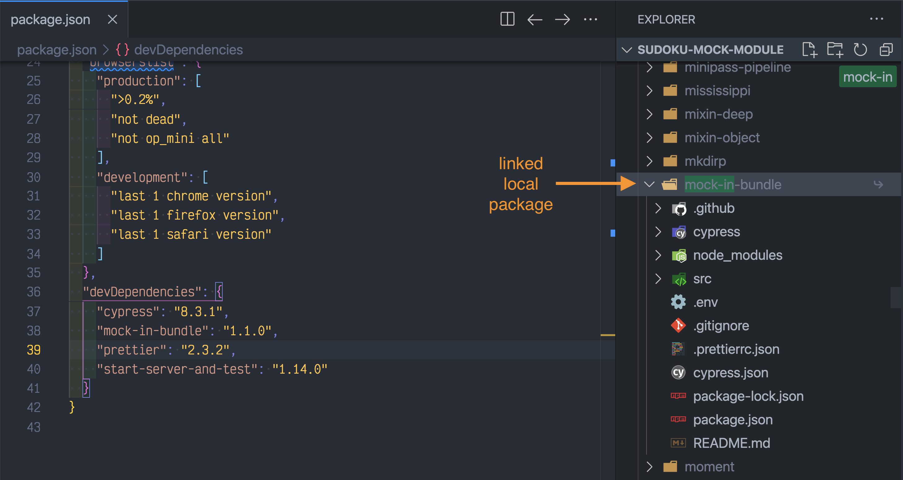

- Install and test
- See available script commands
- Run the command in a different folder
- Keep NPM dependencies up-to-date
- Control the NPM cache
- Generate random string
- See NPM environment variables
- Open NPM package homepage in the browser
- Delete files
- Run NPX command from specific package
- Run different NPM scripts depending on the platform
- Link local module using NPM
- Link local module using Yarn
- Extra tools
- My NPM blog posts
- Related posts
Tip: if you do not have Node installed on your machine, watch this video where I install Node on a Mac, and then install and open Cypress.
Install and test
You can install NPM dependencies and run tests with a single command:
1 | $ npm it |
If you use the package-lock.json file:
1 | $ npm cit |
See available script commands
If the package.json has "scripts" commands like these
1 | { |
You can list them all using
1 | npm run |
Run the command in a different folder
You can use the option --prefix <path/to/folder> to run NPM command in a particular folder. It works like a cross-platform cd <path/to/folder>; npm ... combination.
Let's say we are in a larger project, and the server we want to launch is in its own subfolder
1 | app/ |
Let's say the sub/folder/package.json has a "start" script
1 | { |
Then we can install the dependencies and launch the app in the sub/folder all from the root app/ folder:
1 | app/ $ npm --prefix sub/folder install |
Keep NPM dependencies up-to-date
- using an external service like my favorite Renovate is my preferred way of keeping NPM dependencies up-to-date, read my Renovate blog posts
- using local tool next-update gives you stats and runs the tests when upgrading each module to ensure the update does not break the project
Control the NPM cache
By default NPM downloads the modules to install into ~/.npm folder (and a similar user folder on Windows). You can change the cache folder using an environment variable npm_config_cache. You can also change it at run-time by providing --cache <path/to/folder> argument:
1 | # install NPM dependencies using a local folder ".npm" to |
Generate random string
1 | node -p 'crypto.randomBytes(4).toString("hex")' |
Pseudo-random using `Math.random()
1 | Math.random().toString().slice(2, 10) |
See NPM environment variables
When NPM command like npm run ... executes, it puts all NPM config values into the process.env object. To see all variables set, use
1 | npm run env |
There will be variables prefixed with npm_config_, npm_package_scripts_, npm_config_global_, etc.
Open NPM package homepage in the browser
1 | npm home <npm package name> |
Delete files
To delete files the same way, no matter the operating system, use del-cli as I show in bahmutov/test-del-cli repo. For example, using NPX you could do:
1 | npx del-cli 'cypress/screenshots/*' |
Make sure to pass the wildcards using quotes to let the del-cli find the files.
Note: if there are no files matching the pattern, del-cli exits with code 0
Run NPX command from specific package
Use the NPM package and find the alias inside:
1 | $ npx available-versions cypress-grep |
Specify the package name and the alias name to run:
1 | # npx -p <package name> <bin alias name> <arguments...> |
Run different NPM scripts depending on the platform
It is very annoying to have cross-OS differences, so the package run-script-os nicely helps with that. Example of doing a different test command:
1 | { |
The user only needs to execute npm test and an appropriate script will run depending on the platform.
Link local module using NPM
- in the local package (for example called
MyModule) runnpm link - go into the project and run
npm link MyModule
The node_modules/MyModule should be a link to the local package folder.
To remove the link, reverse the steps
1 | in the project |
Link local module using Yarn
If you are developing an NPM module and want to consume it in another local project, use Yarn link.
- in the package you want share locally execute
yarn link, for example inMyModule
1 | /MyModule: yarn link |
- in all projects that use
MyModuleexecuteyarn link MyModule
Here is the result of linking mock-in-bundle in the current project. The node_modules/mock-in-bundle is a link to the external folder.

To unlink packages:
- in all projects execute
yarn unlink MyModule - in the
MyModulepackage itself executeyarn unlink
Extra tools
Here are some useful tools I use every day:
- npm-quick-run lets you run NPM scripts without typing the full script name.
- available-versions fetches the new versions for the given NPM package name and shows them in a nice console table.
- as-a runs a given command, including NPM scripts with additional settings from the secrets file injected as environment variables.
- bin-up Finds an installed tool in node_modules/.bin folders from current up to the git root.
- bahmutov/npm-install is my GitHub action for simple NPM installs (with caching) when using GitHub Actions.
My NPM blog posts
- How I Organize my NPM Scripts
- Do Not Let NPM Cache Snowball on CI
- Subfolders as Dependencies
- Do not use NODE_ENV for staging
- How I publish to NPM
- Shell variables in NPM scripts
- Smaller published NPM modules